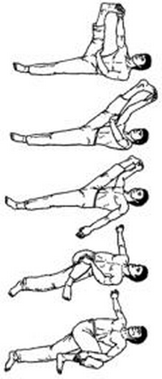

Тигр потягивает лапы

Исходное положение: Лежим на спине, ноги вытянуты. Правую поднимаем вверх и правой рукой обхватываем ее пальцы; левой рукой упираемся в правое бедро, распрямляя правую ногу.
Совершая покачивающие движения ногой, постепенно притягиваем ее к себе. При этом стремимся не отрывать спину от пола. Затем правой рукой отводим правую ногу вправо и опять максимально подтягиваем ее стопу к голове. После этого сгибаем правую ногу в колене и, слегка поворачиваясь корпусом влево, стараемся коснуться правым коленом пола слева от себя. Желательно при этом колено максимально подтянуть к левой подмышке. В этой последней фазе упражнения помогайте левой рукой прижимать правое бедро к полу, а правую руку вытяните вправо, стремитесь, чтобы лопатки не отрывались от пола.Выполняя упражнение в первых двух фазах, следите за тем, чтобы правая нога не была согнута в колене, а левая была выпрямлена, спина полностью прижата к полу. Задача – максимально приблизить ногу к груди. (Выполняется 1 раз.)
Выполняем это упражнение с другой ногой.
Next up: Тигр потягивает спину